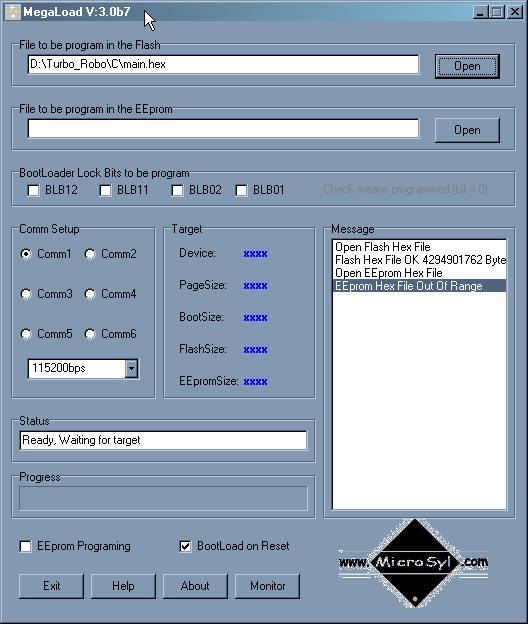
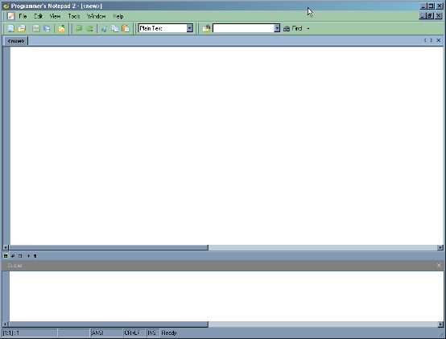

|
Copy the content of the CD on your hard disk. No further installation is needed. You can find the TurboRobo program in the Turbo_Robo folder. |
|
MegaLoad can be found in the subfolder of WinAVR, if you want to use it separately from TurboRobo to upload hex files to your microcontroller. |

|
Programmer’s Notepad can be found in the subfolder of WinAVR, if you want to use it separately from TurboRobo to program C source code. |
